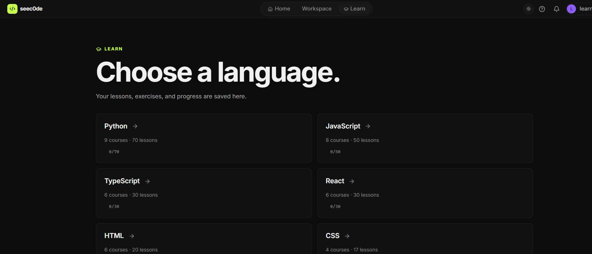
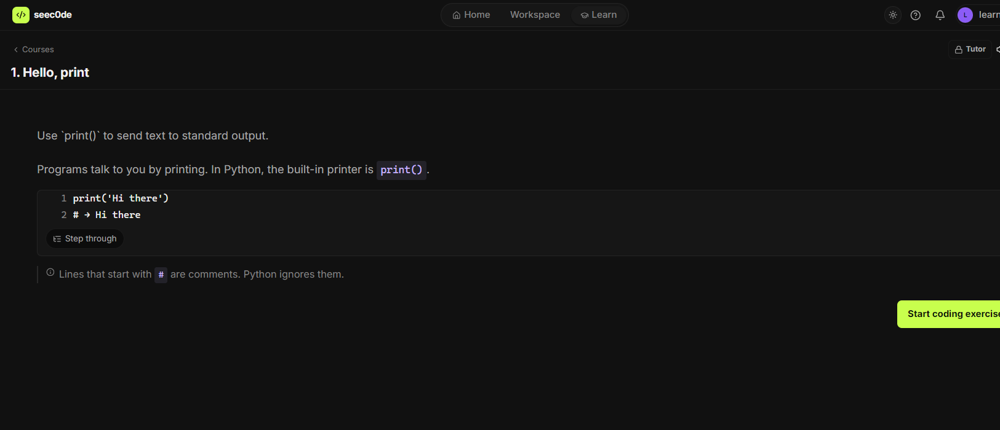
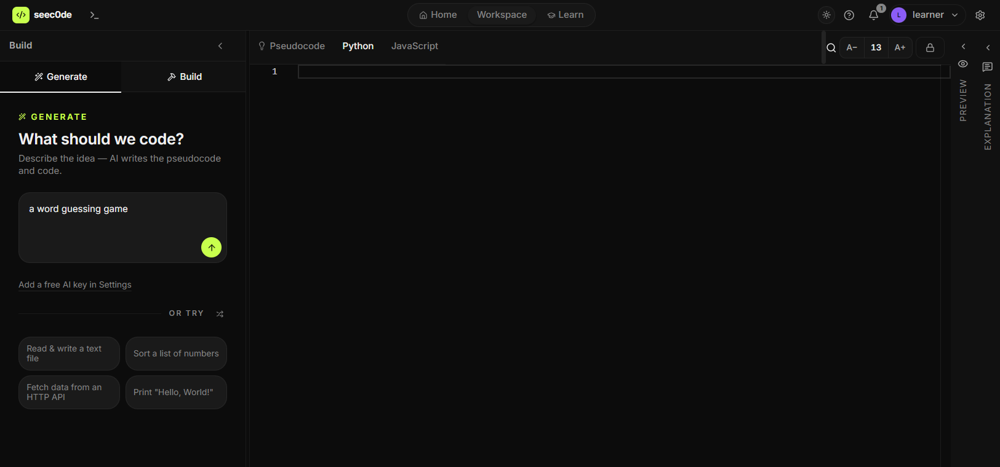
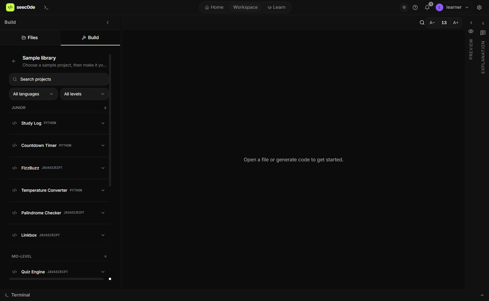
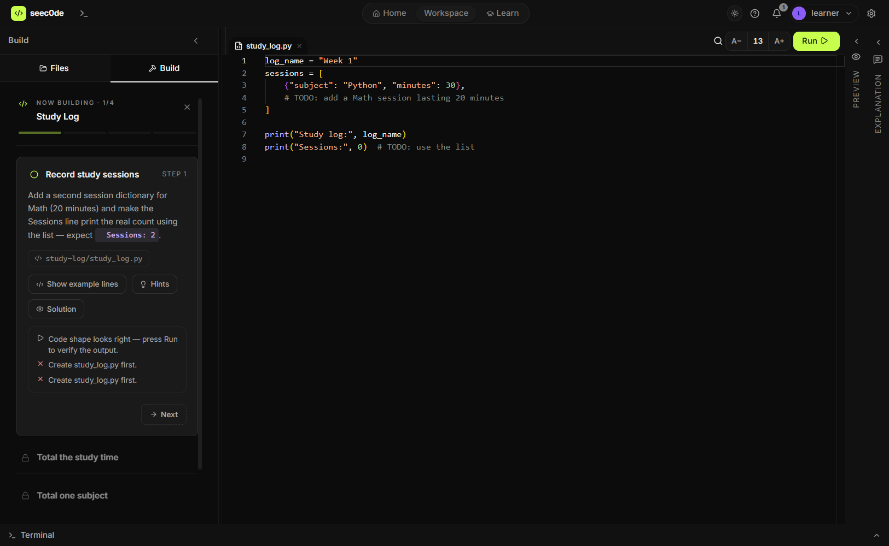
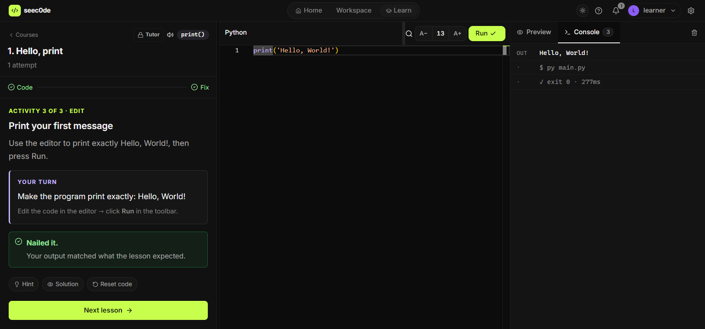
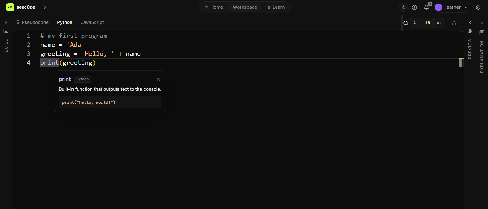
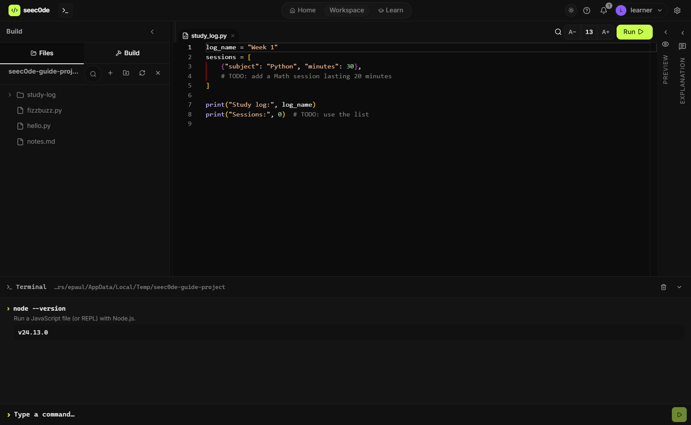
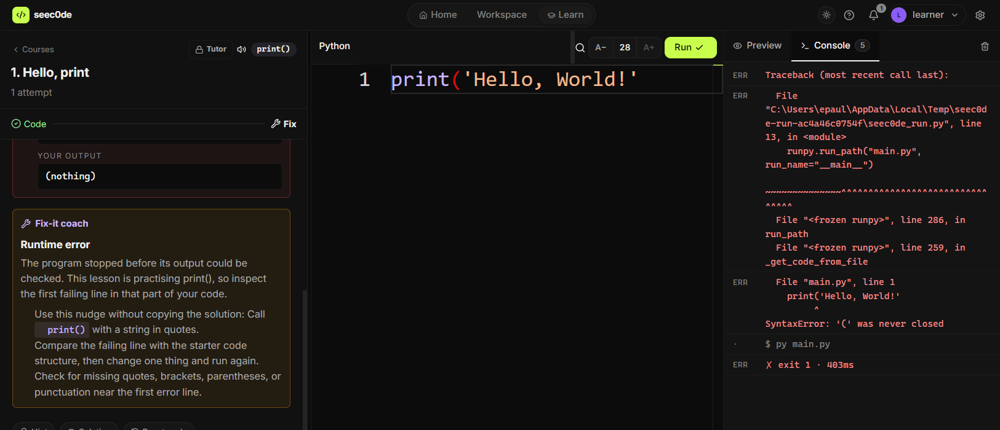
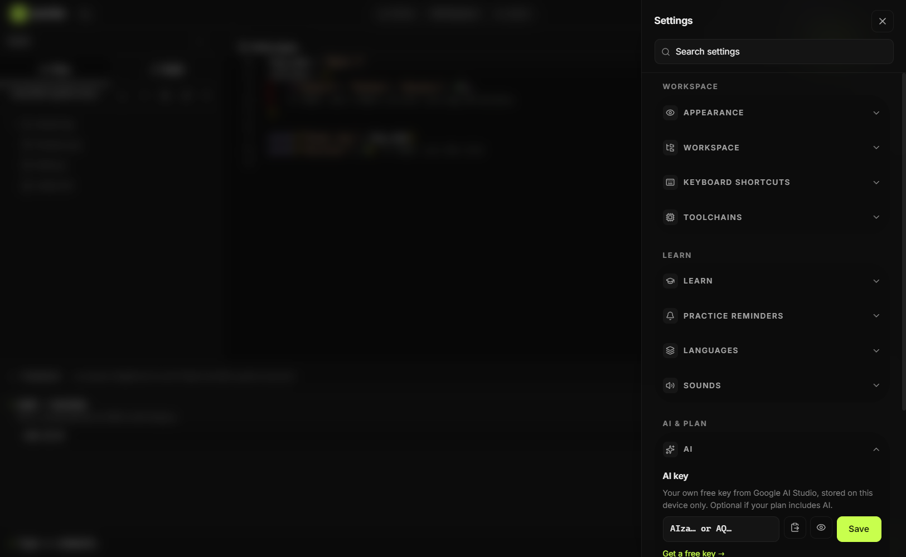

The guide · v4.4.0
Everything the app does.
seec0de has two modes — Learn for guided lessons and Workspace for your own code — plus settings, a terminal and explanations throughout. This page walks through all of it, in the order you'll meet it.
01 — Install
Download, run, done.
seec0de is a Windows app (10 and 11). There is no account and no setup wizard to fight through. The installer is about 100 MB.
-
01
Download the installer from GitHub Releases and run it. A portable version is on the same release page.
-
02
Open seec0de. On first launch you pick a name — it is saved on this device only, and you can skip it.
-
03
A short tour points out the layout. Close it whenever you like; you can replay it from Settings → App → Rerun onboarding.
02 — Home
Your starting screen.
Home is the dashboard: two big buttons (Browse courses, Open workspace), today's bulletin with a short programming article, and your Learning Pulse — a reminder strip that tells you when it's time to practise again.
- — Bulletin articles open in a seec0de window, not your browser.
- — Learning Pulse also lives in the title bar; click the bell to see and dismiss reminders.
03 — Learn mode
Guided lessons, one idea at a time.
Learn is a separate mode from Workspace. Open Learn in the title bar, pick a subject, then choose Courses, Exercises, Projects or Interview practice.

What a lesson looks like
Every lesson teaches one idea, shows a tiny example, then hands you three activities: a worked example, a prediction question, and an edit task in the editor.

In the lesson panel
- Hint / Solution / Reset code — help when you're stuck, without losing your work.
- Step through — walks a code example line by line before you write your own.
- Next lesson — appears once your output matches what the lesson expected.
- Explain it back — after passing, an optional prompt asks you to describe the idea in your own words. Your note is saved on your profile.
- Speak — reads the lesson aloud with sentence-by-sentence highlighting, using the built-in offline speech engine.
- Tutor Pro — ask questions while you work and get guided hints instead of the answer.
Guidance level
Settings → Learn lets you pick Supported, Guided or Independent teaching. Lessons nudge you toward less help as you improve.
04 — Workspace
One window, four panels.
Workspace is where you write your own code. Left is the tool panel (Generate/Build, or Files/Build once a folder is open), the middle is the editor, right is Preview + Console, and the far right is the Explanation panel. Each one collapses.
- — Ctrl+B collapses the left panel; the side rails stay clickable.
- — Ctrl+. hides everything except the editor (focus mode).
- — Panels can be dragged wider; the app remembers the layout.
05 — Generate
Describe it in English.
In the Generate tab, type what you want — "a word guessing game", "sort a list of numbers" — and press the arrow. seec0de writes pseudocode and real code side by side.

-
01
Choose your output languages in the footer of the panel (default: Pseudocode, Python, JavaScript). Change the list in Settings → Learn → Languages.
-
02
Press the arrow. With an AI key you get a model-written answer for any prompt; without one, the built-in offline engine covers common routines — sorting, strings, loops, file reading, classes.
-
03
Switch between the language tabs to compare the same idea in different syntax. When a folder is open, generated code is written into scratch files.
AI is optional
Add a free Google AI Studio key in Settings → AI for richer generation and explanations. Everything still works offline without it. How to add a key.
06 — Build
Guided projects, checked as you type.
Build turns a folder into a workshop. You pick a sample project (or describe your own), and seec0de breaks it into steps that read your code and tell you when a step is right. Open a folder first — Build needs somewhere to put the files.

-
01
Open Files → Open a folder, then switch to Build and expand Sample library.
-
02
Press Start. A dialog asks for the project name, whether files go in this folder or a new subfolder, and whether to pre-fill starter files.
-
03
Work through the steps. Each step targets one file, shows live checks as you edit, and asks you to press Run when the step needs real output.
-
04
Finished steps collapse to a ✓ row. Back revisits earlier steps; the checklist below unlocks in order.

Build with AI Needs a key
Describe a project in your own words instead of picking a sample. Seec0de designs the steps and saves it under My projects.
07 — Files & editor
A real editor for real files.
Files panel
- — Open a folder, refresh the tree, close it again.
- — Create files and folders inline; F2 renames.
- — The tree stays scoped to the folder you opened.
Editor
- — Multiple tabs, dirty dots, autosave about half a second after you stop typing.
- — A− / A+ change the font size; Ctrl+F finds in the file.
- — Lock icon keeps generated code read-only until you unlock it.
- — Breadcrumbs and sticky scroll can be turned off in Settings → Appearance.
08 — Run & preview
Press Run. See what happened.
Run executes the active file and streams its output into the Console: stdout, stderr, exit code and how long it took. While a program runs the button becomes Stop — one click ends the process and anything it started.

- Preview tab renders HTML and linked CSS in a sandboxed frame, updating as you type.
- Console tab is where program output goes; clear it with the bin icon.
- Refresh / open in browser sit in the preview header for web pages.
- Missing a runtime? Settings → Toolchains detects what's installed and gives numbered install steps if something is missing.
09 — Explain
Code you can interrogate.
Select any code in the editor and a floating Explain button appears. It fills the Explanation panel with a line-by-line breakdown that uses your own variable names. Click a highlighted keyword — print, await, for — for a one-line definition and an example.

- Accordion — one line opens at a time, so the explanation never becomes a wall of text.
- Offline fallback — a built-in glossary explains common constructs without any key or connection.
- Collapse — the Explanation panel closes to a rail and reopens with one click.
10 — Terminal
A terminal that explains itself.
Press Ctrl+` to open the terminal. Every command you run gets a one-line plain-English explanation above its output, along with the exit code and duration.

- Knows the usual tools — git, npm, pnpm, yarn, docker, node, python, cargo, go, dotnet and common PowerShell commands.
- cd and clear behave normally and keep your working directory between commands.
- History — arrow up through your last 50 commands, even after a restart.
- Long installs are left alone — installer-shaped commands get a ten-minute budget instead of being cut off.
11 — Errors
Errors become instructions.
You always see the real error message. Below it, seec0de adds a plain-English translation: what went wrong, which line, and two to five things to change. Lessons add a Fix-it coach that compares your output with what was expected.

- Offline coverage — common syntax and runtime errors in Python, JS, TS, C and C++ are translated without a key.
- With AI — unusual errors get a tailored explanation that references your variable names.
- Hide a translation if you'd rather read the raw message yourself.
12 — Profiles
One device, several learners.
Each profile keeps its own lessons, progress, notes and settings — useful for a shared laptop or a classroom. Profiles live on this device and can be locked with a four-digit PIN. Add or switch profiles from the avatar menu, or manage them in Settings → App.
13 — Settings
Settings, in four groups.
Open the gear icon in the title bar and search for what you need. Everything is saved on this device.
Workspace
Appearance (theme, sticky scroll, breadcrumbs), the workspace's default bottom panel, keyboard shortcut reference, and toolchains.
Learn
Guidance level, practice reminders, output languages, and sounds for passing or failing a lesson.
AI & plan
Your AI key, and the plan you're on.
App
Rerun onboarding, check for updates, and see the installed version.
Adding an AI key
The key is optional. With one, generation and explanations are written by Google Gemini; without one, the offline engine handles the common cases.

-
01
Click Get a free key. Google AI Studio opens in your browser — sign in there, create a key and copy it.
-
02
Come back to seec0de — if the key is on your clipboard, the app offers to paste it for you.
-
03
Save is only enabled once the key has been checked against the API. A wrong key is rejected immediately; a network failure is reported separately from a bad key.
Keys are encrypted by your operating system (DPAPI on Windows) and are never exposed to the editor window.
Toolchains
Settings → Toolchains checks whether Python, Node, compilers and git are installed. If one is missing you get a numbered checklist — including the exact command to paste — and a Re-check button. New installs are picked up without restarting the app.
14 — Keyboard
Everything reachable by keyboard.
| Keys | What it does |
|---|---|
| Ctrl+B | Collapse or show the left panel |
| Ctrl+. | Focus mode — editor only |
| Ctrl+` | Show or hide the terminal |
| Ctrl+Enter | Run the active file |
| Ctrl+F | Find in the current file |
| F2 | Rename the selected file |
| Shift+F10 | Open the context menu for the current row |
| Ctrl+ + / − / 0 | Zoom the whole app in, out, or back to normal |
The full list lives in Settings → Keyboard shortcuts.
15 — Free vs Pro
What's free, and what Pro adds.
The app is free to download and use. Core courses, the workspace, running code, explanations and the offline engine need no plan. Pro adds the extras below. Prices and billing live in Settings → AI & plan → See Pro plans.
Free, on every install
- — All core lessons across 22 subjects
- — Generate with the offline engine
- — Build with the 15 sample projects
- — Run, Preview, Console and the terminal
- — Line-by-line explanations and the keyword glossary
- — Error translations, profiles, offline use
Pro
- — Premium courses (including Tailwind CSS, security, system design)
- — AI tutor inside lessons
- — Managed AI, so you can use AI features without your own key
- — Portfolio and completion certificates
- — Timed interview practice with feedback
- — Cloud sync between devices
Some screenshots in this guide show a Pro entry point (the Tutor button, for example) while the rest of the app works without it.
Still stuck, or full of ideas?
Report a bug, or ask for a feature.
Both go by email to yottalium@gmail.com. Inside the app, open Settings → Feedback and the report comes with your version, system and language already filled in — nothing is sent until you review it in your mail app. Every destructive action in the app asks before it deletes anything, so a wrong click is hard to make permanent.